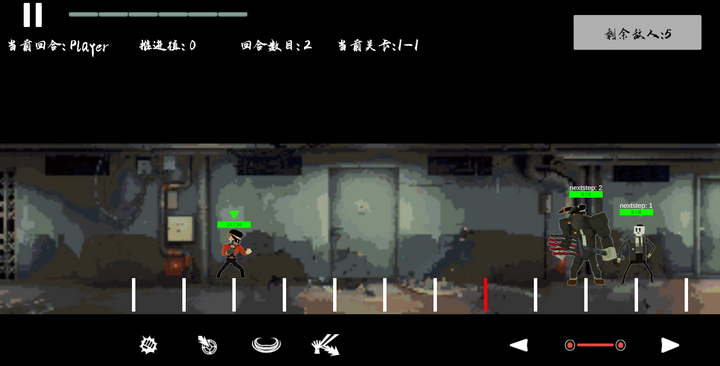
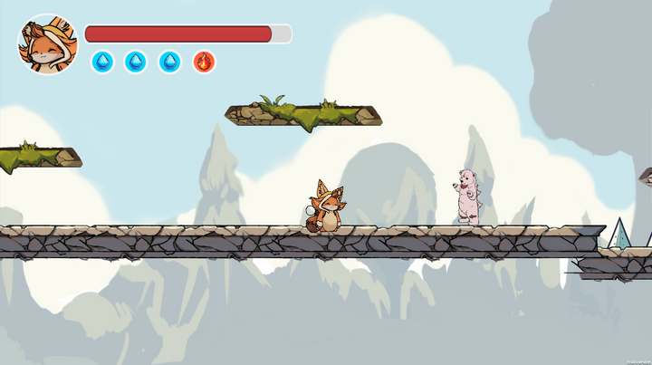
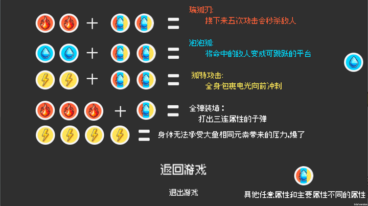

逻辑锁

2023 GENE AI＋游戏开发季 - 复杂与简单
本游戏主要玩法分为两个阶段，第一阶段是扩展了推箱子规则的puzzle，第二阶段是带有数值RPG的八轴射击的俯视角战斗。玩家在第一阶段中推箱子时需要为接下来的战斗阶段思考策略，因为被推入坑中的箱子都会成为战斗阶段的道具或机关，帮助玩家数值成长并渡过战斗阶段，收获更多金币来调整下一次推箱子阶段的收益，以此来达到玩法循环。
在玩法设计上，该玩法在两个不同的阶段为玩家提供了不同的思考侧重。在推箱子阶段玩家会需要更多的观察和决策，而在战斗环节则需要更多的判断和执行，玩家画像更适合独立游戏核心玩家。两个阶段互相影响能够给玩家提供更多的动机和反馈，以此来让玩家更容易达到心流状态。
反思和方法论沉淀：在制作和迭代方面，由于两位程序分别负责不同的部分，导致最后两个部分的对接并不顺利，这是交流和项目管理不足导致的。作为游戏策划，应该更多的主动和程序交流，了解进度，可以借助策划文档来为程序划分功能需求，并作为checklist来记录完成的功能。
担任职位
策划，PM，程序
卡牌大师计划
2023 个人游戏策划案玩法原型
本游戏意在将第一人称射击玩法和DBG卡牌游戏融合，玩家需要在第一人称操作下和敌人拉扯走位，同时思考如何利用手上的费用和卡牌等资源来击败敌人，并在rougelike的玩法循环中收获数值成长和牌库的构筑。
本作玩法受到《Neon White》的启发，希望为卡牌游戏增添更多动作属性。但强化了执行环节后玩家的注意力自然要从判断和决策环节减少，所以必要的改变了玩家的手牌数量和费用获取。玩家手牌数量始终为一张，打掉或弃掉这张牌才能抽取下一张，为了扩展决策树，在观察环节玩家可以看到抽到的下一张牌和牌库中剩余的牌，以此来判断是否讲手上的牌打出。游戏最终玩法会适用于对卡牌游戏，rougelike都感兴趣的核心向玩家。
反思和方法论沉淀：在开发玩法原型的过程中多次对游戏玩法提出质疑，修改和迭代，发现游戏玩法如果只停留在策划案阶段是纯粹的纸上谈兵，必须实际操作才会意识到玩法上的缺陷。所以对于玩法测试，最好的办法就是通过控制变量逐步修改游戏规则元素，以此来发现玩法缺陷所在并思考优化方式，修改数值或是重做系统。此外对游戏策划案的制作和迭代也有不小的收获应该先测试并确定好游戏玩法再逐渐完善策划案，否则会需要大动干戈的修改很容易出现混乱。最后在代码方面，借助CHATGPT完成代码可以更迅速的实现功能，但是使用者必须有足够的代码基础，能够分析bug出现的原因，因为GPT4的需求实现依然不够稳定。
担任职位
独立完成
地狱旅馆

Github GameOff 2023 - Scale
本游戏是一个回合制的横轴地图游戏，玩家和敌人都会在划分好的格子上移动。其中红色的格子是玩家和敌人的分界线，他代表着玩家的可移动范围，同样也代表着玩家的血量，玩家和敌人的攻击都会使红色格子左右移动，如果红色格子移动到最左边则玩家死亡，而玩家可以让红色格子向右移动来秒杀附近的敌人。玩家的攻击技能和敌人距离，格子站位息息相关，这也是玩家主要的策略考虑部分。
本作品的玩法意在创新，相似玩法参考只有《暗黑地牢》（但暗黑地牢的战斗环节并没有移动系统），所以在设计难度上较高，规则不断修改，主要考量为扩充个玩家决策树，提升选择和决策的乐趣，让游戏能都满足轻度玩家和核心玩家。
反思和方法论沉淀：由于玩法较为创新和抽象，所以在具象化玩法上成为了和成员沟通的主要难题。采用的方法是在设计规则时使用了illustrator设计纸面原型，并在线上会议直播展示给程序。然而最终效果依然有失偏颇，程序花了较长的时间去理解我脑海中的玩法，这是由于线上合作沟通不利导致的。作为游戏策划，应该更主动的提升具象化表达思想的能力，减少沟通损耗。


担任职位
策划
汲元奇境
2023吉比特高校游戏开发大赛 - 吸收
本游戏是一款2D横版过关游戏，其机制围绕吸收主题设定了主角的能力为吸收敌人的攻击，并将其组合成不同的技能来帮助玩家通关。游戏改变了传统2D横版过关游戏的血量规则，使玩家的血量和吸收技能挂钩，玩家吸收槽为满时收到的弹幕攻击不会使玩家受伤而是积攒吸收槽，而吸收槽满了之后玩家再受伤会引爆吸收槽，让玩家受到很高的伤害。
这样的设计是为了改变玩家的决策和执行环节，给予玩家将风险转化为机遇的选择，以此来丰富玩家的决策树，创造更多趣味性。
反思和方法论沉淀：本次比赛中遇到的最大的问题是对项目量的错误预估，设置了过多的开发需求，导致最终截止时游戏仍然存在大量bug。作为游戏策划和PM，应该借助更多的工具来具象化需求，借此评估开发体量。并且在开发过场中应做到精简核心玩法，做到需要的时候能给需求减量并且不影响游戏的核心玩法。


担任职位
策划，PM，程序